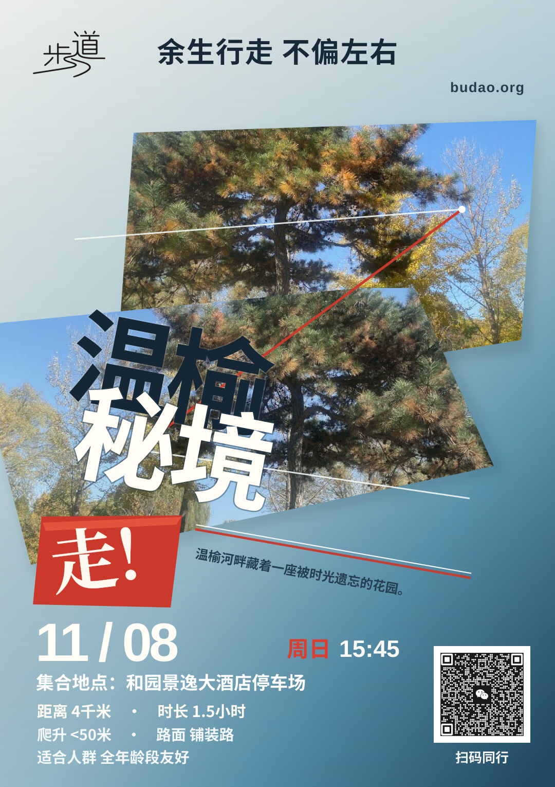

原作 · PORSCHE Rennsport Reunion IV2011 · Dennis Simon

原创 · 步道「温榆秘境」V3 · 1080 × 1530 SVG


01 品牌与标语左上仅现有步道 Logo，顶部中央完整“余生行走 不偏左右”，右上仅网址。
02 之字形行进上方自然景象与下方水平翻转图像错层，形成 Z 字前进方向。
03 标题与焦点「温榆／秘境」两行向右下倾斜；朱红菱形置于下方，书写「走！」。
04 渐变与动线完整统一的淡银蓝到深湖蓝渐变；白线、红线与路线描述同向倾斜。
05 真实活动信息周日、15:45、集合地点、距离、时长、爬升、路面、全年龄段友好和原始二维码。
准确性说明：照片只有同一张：温榆秘境原始活动照片（园林、树木、石桥）。下方只是镜像和滤色，并非另找照片；二维码是原始 PNG 图像，不添加装饰白框，但保留二维码本身用于扫描的留白。爬升为 <50米，路面为“铺装路”，适合人群为“全年龄段友好”，全部来自已发布路线数据。
这是独立设计预览，不影响 Tent 生产发布流程。二维码尚未经过实体设备扫码验收，本版不标记为正式上线。
这是独立设计预览，不影响 Tent 生产发布流程。二维码尚未经过实体设备扫码验收，本版不标记为正式上线。